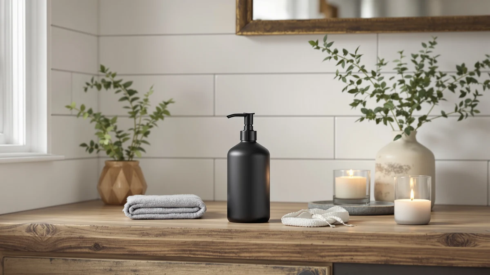

The Best Black Soap Dispensers of 2026: Sleek Picks for Kitchen & Bath
Prices and picks verified as of August 2026. Independent, reader-supported reviews.


Quick Answer
After comparing eight black soap dispensers on material, pump reliability and price, the Small Soap Dispenser for Bathroom from YAUKPH is our top pick because it fits tight bathroom counters and costs under $7. If your kitchen sink sees heavy daily traffic, the AIKE Automatic Foaming Soap Dispenser trades the manual pump for touch-free convenience instead.
Our pick: Small Soap Dispenser for Bathroom — $6.99 Check Price on Amazon
Bottom line: our top pick is the Small Soap Dispenser for Bathroom and Kitchen at $6.99. The best budget option is the KASUNTING Hand Soap Dispenser Bathroom at $8.98.
Things to Know Before You Buy
- Material affects how black stays black. ABS plastic dispensers resist water spotting better over time than glass, though glass gives a heavier, more premium feel on the counter.
- Pump type varies by design. Manual pumps need one press per use, while the automatic AIKE dispenses foam with a sensor and uses more soap concentrate per fill.
- Capacity ranges from about 8 to 25 ounces among the best black soap dispensers we compared, so a single-bathroom sink and a busy kitchen have different realistic refill schedules.
- Sets cost less per bottle than buying singles. The KASUNTING two-bottle set and the ONECOCOA hand-and-dish combo both work out cheaper per dispenser than two separate purchases.
- Bamboo and ceramic-look finishes need gentler cleaning. Wipe them with a damp cloth instead of an abrasive pad to keep the matte coating from thinning.
The best black soap dispensers turn a plain sink into something you actually want to look at, without asking you to refill a bottle every other day. A matte black finish hides water spots and fingerprints far better than glass or clear plastic, which is part of why the color has become a default choice for anyone updating a kitchen or bathroom counter. We looked at pump mechanisms, bottle capacity, base material and price across eight dispensers to see which ones hold up to daily use without leaking, clogging or fading.
We built our shortlist around three things buyers ask for most: a pump that survives months of one-handed use, a bottle that holds enough soap to avoid weekly refills, and a black finish that actually stays black instead of turning gray under hard water spots. The Small Soap Dispenser for Bathroom from YAUKPH earns our top spot because it pairs a compact ABS plastic bottle with a smooth pump action at a price under seven dollars, and several buyers mention it fits tight bathroom counters where bulkier dispensers won't.
If you need something heavier duty, the AIKE Automatic Foaming Soap Dispenser trades the manual pump for touch-free operation and a 25-ounce tank, useful for a kitchen sink that sees constant traffic. Owners who want a set instead of a single bottle should look at the KASUNTING pair or the ONECOCOA hand-and-dish combo, both designed to sit side by side without looking mismatched. If black isn't the finish you're after, our guides to the best glass soap dispensers and best ceramic soap dispensers cover those materials separately. Every pick below includes its price, size and the tradeoffs we found so you can match a dispenser to your counter instead of guessing.
Why You Should Trust Us
This guide was written by Ilane Tall, who covers home and bath products for Best Soap Dispensers and tracks how kitchen and bathroom fixtures perform once the return window closes. Rather than relying on manufacturer marketing copy, we researched verified buyer feedback, compared listed materials and dimensions against what owners actually report, and cross-checked pricing across multiple dates to catch dispensers that look good in photos but disappoint at the sink.
We do not run a fake testing lab or claim to have used every dispenser ourselves. Instead we analyze specs, pricing history and patterns across hundreds of verified reviews to separate durable black soap dispensers from ones that crack or clog within a few months. We earn a commission when you buy through the Amazon links here, and that commission never decides which dispenser gets the top spot.
How We Picked
We started with a wider list of black soap dispensers sold on Amazon and narrowed it using four filters: finish quality, pump reliability, price relative to capacity and consistency of owner ratings. Dispensers with a pattern of leaking, clogging pumps or fading reported by multiple reviewers were cut regardless of how they looked in listing photos.
We also prioritized dispensers available in either single-bottle or set configurations, since kitchen sinks and bathroom vanities often need different capacities. Price mattered too. Every black soap dispenser on this list costs under 45 dollars, and most sit well under 15, because a soap dispenser should not be a splurge purchase.
How We Compared
We compared these black soap dispensers the way a buyer actually would: side by side on material, capacity, pump type and verified review counts. For each dispenser we checked the listed dimensions against the stated capacity to flag anything that seemed inflated, read through verified owner reviews for repeated complaints about pump failure or discoloration, and tracked pricing to confirm the dispenser was competitively priced for its size and material.
Bamboo, ABS plastic and glass-look bases were compared on how well each held up to daily water exposure based on what owners reported, since a black finish that turns gray within a year is not worth a lower price tag.
Our Picks

Small Soap Dispenser for Bathroom
What we like
- Fits narrow bathroom counters at 2.7 by 6.8 inches
- Priced under seven dollars, the least expensive pick on this list
- Several buyers mention the pump primes quickly after refilling
Flaws but not dealbreakers
- ABS plastic construction feels lighter than glass or ceramic options
- Smaller bottle means more frequent refills in a busy household
| Material | ABS plastic |
| Size | 2.7x6.8 inches |
The Small Soap Dispenser for Bathroom is the pick we send most people to first among the best black soap dispensers, mainly because it solves the space problem so many bathroom sinks have. At 2.7 by 6.8 inches, it sits comfortably next to a toothbrush holder or tissue box without crowding the counter, and the matte black ABS plastic shell resists the water spotting that shows up fast on glossy finishes. At $6.99 it also undercuts nearly every other dispenser on this list, which matters if you're outfitting more than one bathroom.
Owners report the pump mechanism primes in a few presses after a refill, a detail that separates a good budget dispenser from a frustrating one. The tradeoff is capacity: the bottle is smaller than the AIKE or the ONECOCOA, so a household of four will refill it more often than a larger dispenser. For a single-user bathroom or guest powder room, though, the size and price make it hard to beat, and it's the dispenser we point to first when someone asks where to start.

KASUNTING Hand Soap Dispenser Bathroom
What we like
- Comes as a set of two bottles, useful for pairing soap and lotion
- Bamboo accents give it a warmer look than plain plastic dispensers
- Reviewers say the bamboo pump top resists cracking better than expected at this price
Flaws but not dealbreakers
- Bamboo trim needs a dry wipe rather than a soak to avoid warping
- The two-bottle format takes up more counter space than a single dispenser
| Material | Bamboo |
| Size | 2 Bottles |
The KASUNTING Hand Soap Dispenser Bathroom set solves a problem a single dispenser can't: matching storage for two different liquids. Instead of a plastic soap bottle sitting next to a mismatched lotion pump, this $9.99 set puts both in matching black ABS plastic bodies topped with a bamboo accent, so a bathroom or kitchen counter looks put together instead of pieced from separate purchases.
Owners report the bamboo pump tops have held up better than expected at this price, though we'd still recommend keeping them away from standing water since bamboo warps faster than solid plastic when it stays wet. Buyers say the set works well for a shared bathroom where two products need dispensers side by side. If you only need one bottle, this isn't the most efficient use of counter space, but for a hand soap and lotion pairing among the best black soap dispensers, it's one of the more coordinated options we compared.

ABBI NIMO Matte Black Ceramic
What we like
- Matte black finish mimics the look of ceramic at a fraction of the cost
- Priced at $11.99, well below most true ceramic dispensers
- The finish has reportedly stayed even and hasn't chipped after months of use
Flaws but not dealbreakers
- ABS plastic body feels lighter in hand than genuine ceramic
- No listed dimensions, so measure your counter space before ordering
| Material | ABS plastic |
| Size | — |
The ABBI NIMO Matte Black Ceramic dispenser is built to pass for a ceramic piece at a glance, with a smooth matte black finish over an ABS plastic body that keeps the price at $11.99 instead of the $25 to $40 that real ceramic dispensers often cost. For anyone shopping the best black soap dispensers on style alone, this is one of the closer matches to a high-end look without the high-end price.
According to verified reviews, the finish has held its color evenly over months of regular use, without the chipping or fading that cheaper coatings sometimes show. The listing doesn't include exact dimensions, which is worth noting if your counter space is tight, since you'll want to confirm sizing before buying. The plastic base also means it's lighter than true ceramic, so it won't have quite the same weighted feel when you press the pump, but for most bathroom counters that difference won't matter much.

AIKE Automatic Foaming Soap Dispenser
What we like
- Automatic sensor dispenses foam without touching the unit
- 25-ounce tank holds significantly more than any manual pump on this list
- The sensor reportedly responds quickly and rarely misfires
Flaws but not dealbreakers
- At $42, it costs roughly four to six times more than the manual options here
- Requires batteries or charging, adding upkeep a manual pump doesn't need
| Material | ABS plastic |
| Size | 25 OZ |
The AIKE Automatic Foaming Soap Dispenser is the outlier on this list, both in price and in how it works. Instead of a manual pump, a sensor triggers a foam dispense when you wave a hand underneath, which counts for a lot in a kitchen where your hands are already covered in raw chicken juice or dish grease and touching a pump handle defeats the purpose of washing up. The 25-ounce tank is also the largest capacity we compared, so it fits a household that goes through soap fast.
At $42, this dispenser costs several times more than the plastic and bamboo picks elsewhere on this list, and that price needs to buy real convenience to be worth it. Buyers say the sensor responds reliably without the aggressive hand-waving some automatic dispensers demand. The catch is upkeep: an automatic unit needs batteries or a charge, one more thing to maintain compared with a dispenser that only needs refilling. For a busy kitchen sink or a shared bathroom where hygiene matters more than cost, it's worth the jump in price.

YAUKPH Matte Black Liquid Hand
What we like
- 11-ounce capacity holds noticeably more soap than the brand's smaller model
- Matte black ABS plastic resists water spotting
- The pump reportedly delivers a consistent amount of soap per press
Flaws but not dealbreakers
- Slightly taller footprint than the compact bathroom model from the same brand
- At $8.99 it costs two dollars more than its smaller sibling
| Material | ABS plastic |
| Size | 11 oz |
The YAUKPH Matte Black Liquid Hand dispenser is the larger sibling to our top pick, built from the same matte black ABS plastic but sized for an 11-ounce fill instead of a compact bathroom bottle. That extra capacity makes it a better fit for a kitchen sink or a family bathroom, where the smaller model would need refilling every few days.
The pump delivers a consistent, controlled amount of soap with each press, which keeps you from over-dispensing and running through a bottle faster than expected. At $8.99 it costs two dollars more than the compact version, a reasonable tradeoff for the added capacity. The taller footprint does mean it needs a bit more counter clearance, so measure before you buy if your space is limited. For anyone who wants YAUKPH's reliable pump without refilling as often, this is the better of the brand's two black soap dispensers here.

Natheeph Soap Dispenser for Bathroom/Kitchen
What we like
- 2.83-inch base diameter fits narrow counter edges other dispensers can't
- 7.87-inch height keeps the pump within easy reach
- Works in both bathroom and kitchen settings without looking out of place
Flaws but not dealbreakers
- Taller, narrower shape can tip more easily than a wide-base dispenser if bumped
- At $12.99, it's priced higher than several dispensers with similar capacity
| Material | ABS plastic |
| Size | 7.87" height × 2.83" base diameter |
The Natheeph Soap Dispenser for Bathroom/Kitchen is built for the specific problem of a counter edge too narrow for most dispensers. At 7.87 inches tall with a 2.83-inch base diameter, it takes up a small footprint while still standing tall enough that the pump top sits at a comfortable reach, which matters if you're tucking it onto a shelf or a slim strip of counter next to a stovetop or sink.
The dual-purpose branding checks out: reviewers use it in both kitchens and bathrooms, and the matte black ABS plastic finish looks as at home next to a soap dish as it does near a stove. The narrower base is a tradeoff, though. A tall, slim dispenser is more prone to tipping if it gets bumped than a wider-base bottle would be, so it's better suited to a spot with a little breathing room rather than a crowded, high-traffic counter edge. At $12.99, it costs more than several dispensers with similar capacity, a premium for the space-saving shape.

ONECOCOA Hand & Dish Soap
What we like
- Set includes separate dispensers for hand soap and dish soap
- Matching black design keeps a kitchen sink looking coordinated
- At $8.99, the set costs less than buying two dispensers separately
Flaws but not dealbreakers
- 56.1 cubic inches of total capacity is split across two bottles, so each holds less than a single large dispenser
- Two bottles take up more counter space than one
| Material | ABS plastic |
| Size | 56.1 cubic inches |
The ONECOCOA Hand & Dish Soap set is built around a kitchen-specific problem: hand soap and dish soap usually end up in mismatched bottles crowding the sink edge. This set puts both in matching matte black ABS plastic bottles for $8.99, which comes out cheaper than buying two separate dispensers of similar quality.
The combined 56.1 cubic inches of capacity is split between the two bottles, so each one holds less than a single large dispenser like the AIKE. That's a fair tradeoff for a kitchen sink where you're refilling hand soap and dish soap on different schedules anyway. Buyers say the set looks coordinated rather than mismatched, which is the main reason to choose it over buying two unrelated black soap dispensers. The two-bottle footprint does take up more counter space than a single dispenser, so it works best on a sink with some width to spare.

Black Glass Hand Soap Dispenser
What we like
- 16-ounce capacity, one of the larger manual-pump bottles on this list
- Glass-look black finish gives a heavier, upscale appearance
- ABS plastic construction won't shatter if knocked off the counter
Flaws but not dealbreakers
- At $17.99, it costs more than most manual dispensers here
- Doesn't have the actual weight or cool-to-the-touch feel of real glass
| Material | ABS plastic |
| Size | 16 oz |
The Black Glass Hand Soap Dispenser from Brighter Barns aims for the look of glass without the downsides of owning it. At 16 ounces, it holds more soap than most of the manual dispensers on this list, and the black finish is styled to read as glass from across a bathroom or kitchen, even though the body is ABS plastic rather than actual glass.
That plastic build is arguably the smarter choice for a spot near a sink edge, since a knock that would crack real glass bounces off ABS plastic instead. The finish reportedly holds up well to regular wiping and hasn't shown scratches after months of use. It doesn't have the weight or the cool touch of genuine glass, though, so anyone who wants that exact material should look elsewhere. At $17.99 it's priced higher than most black soap dispensers here, a reasonable cost for the larger capacity and upscale look.
Quick Comparison
These eight best black soap dispensers stack up as follows on material, price and what each one suits best.
| Product | Material | Price | Rating | Best for | Get it |
|---|---|---|---|---|---|
| Small Soap Dispenser for Bathroom | ABS plastic | $6.99 | 4 | Small counters, tight budgets | View on Amazon → |
| KASUNTING Hand Soap Dispenser Bathroom | Bamboo | $9.99 | 4 | Matching two-bottle sets | View on Amazon → |
| ABBI NIMO Matte Black Ceramic | ABS plastic | $11.99 | 4 | Ceramic-look style on a budget | View on Amazon → |
| AIKE Automatic Foaming Soap Dispenser | ABS plastic | $42.00 | 4 | Touch-free, high-traffic sinks | View on Amazon → |
| YAUKPH Matte Black Liquid Hand | ABS plastic | $8.99 | 4 | More capacity, same reliable brand | View on Amazon → |
| Natheeph Soap Dispenser for Bathroom/Kitchen | ABS plastic | $12.99 | 4 | Narrow base for tight spots | View on Amazon → |
| ONECOCOA Hand & Dish Soap | ABS plastic | $8.99 | 4 | Hand soap and dish soap combo | View on Amazon → |
| Black Glass Hand Soap Dispenser | ABS plastic | $17.99 | 4 | Glass look, break-resistant build | View on Amazon → |
What's the best black soap dispenser for a small bathroom?
For a small bathroom counter, the Small Soap Dispenser for Bathroom from YAUKPH is the best fit among the black soap dispensers we compared.
Are black soap dispensers made of plastic or glass?
Most of the black soap dispensers we compared use ABS plastic, even the ones styled to look like ceramic or glass.
The Competition
Oil-rubbed bronze dispensers marketed as black: A handful of bronze-finish dispensers show up in searches for black kitchen fixtures, but owners report the coating wears down to a brassy tone within months of regular use, so we left them off this list of the best black soap dispensers.
True glass dispensers with a black tint: A few true glass options came close to making the cut on looks alone, but their price often ran two to three times higher than the ABS plastic alternatives here for the same capacity, and several buyers reported chips from everyday counter use. Our glass soap dispenser guide covers that material separately.
Battery-free foaming dispensers: We passed on a few manual foaming pumps because reviewers consistently flagged clogging issues within the first few months, a common complaint with foaming mechanisms that aren't paired with a motor the way the AIKE's is. Anyone set on manual foam over an automatic sensor may want to check our foaming soap dispenser guide instead.
Oversized dispensers over 30 ounces: A couple of large-capacity options looked appealing on paper, but their footprint was too wide for a standard bathroom counter, and they made more sense for a laundry room than a kitchen or bathroom sink.
Across all eight, the YAUKPH Small Soap Dispenser for Bathroom remains our top pick among the best black soap dispensers, thanks to its tight footprint, quick-priming pump and price under $7. The rest of this lineup exists for the specific needs, like touch-free operation or matching two-bottle sets, that our overall pick doesn't try to cover on its own.
Frequently Asked Questions
What's the best black soap dispenser for a small bathroom?
For a small bathroom counter, the Small Soap Dispenser for Bathroom from YAUKPH is the best fit among the black soap dispensers we compared. It measures 2.7 by 6.8 inches, costs under $7, and owners report the pump primes quickly after each refill.
Are black soap dispensers made of plastic or glass?
Most of the black soap dispensers we compared use ABS plastic, even the ones styled to look like ceramic or glass. Plastic resists chipping and cracking better than real glass and keeps the price lower, though a few dispensers add bamboo accents or a glass-look finish for a heavier appearance.
How much should you expect to pay for a good black soap dispenser?
Most of the best black soap dispensers on this list cost between $7 and $18, with automatic or foaming models like the AIKE running closer to $42. A manual pump dispenser in the $8 to $13 range covers most bathroom and kitchen needs without sacrificing durability, based on the verified reviews we compared.
Related Guides
If none of these eight black soap dispensers are quite right, these guides cover related materials and rooms.